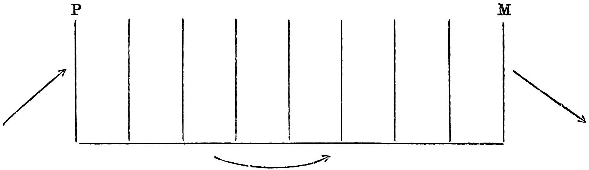
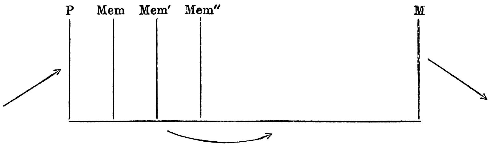
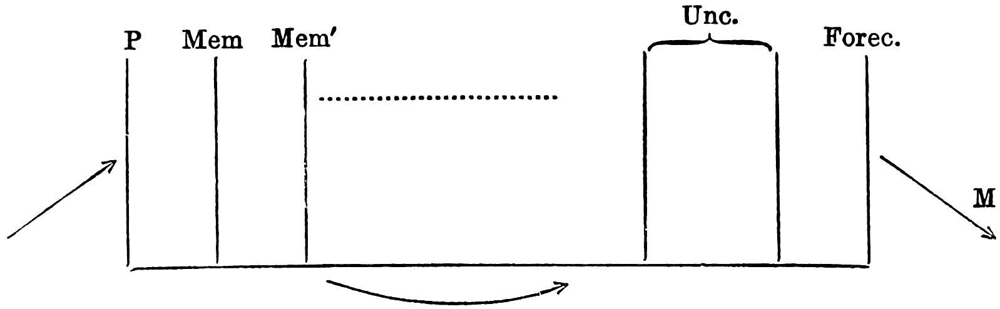

Chapter 14: VII THE PSYCHOLOGY OF THE DREAM ACTIVITIES, part 1 (( a ) Forgetting in Dreams to ( c ) The Wish-Fulfilment)¶
Among the dreams which I have heard from others there is one which at this point is especially worthy of our attention. It was told to me by a female patient who in turn had heard it in a lecture on dreams. Its original source is unknown to me. This dream evidently made a deep impression upon the lady, as she went so far as to imitate it, i.e. to repeat the elements of this dream in a dream of her own in order to express by this transference her agreement with it in a certain point.
The essential facts of this illustrative dream are as follows: For days and nights a father had watched at the sick-bed of his child. After the child died, he retired to rest in an adjoining room, leaving the door ajar, however, so as to enable him to look from his room into the other, where the corpse lay surrounded by burning candles. An old man, who was left as a watch, sat near the corpse murmuring prayers. After sleeping a few hours the father dreamed that the child stood near his bed clasping his arms and calling out reproachfully, “Father, don’t you see that I am burning?” The father woke and noticed a bright light coming from the adjoining room. Rushing in, he found the old man asleep, and the covers and one arm of the beloved body burned by the fallen candle.
The meaning of this affecting dream is simple enough, and the explanation given by the lecturer, as my patient reported it, was correct. The bright light coming through the open door into the eyes of the sleeper produced the same impression on him as if he had been awake; namely, that a fire had been started near the corpse by a falling candle. It is quite possible that on going to sleep he feared that the aged guardian was not equal to his task.
We can find nothing to change in this interpretation. We can add only that the contents of the dream must be over-determined, and that the talking of the child consisted of phrases that it had uttered while still living, which recalled to the father important events. Perhaps the complaint, “I am burning,” recalled the fever from which the child died, and the words quoted, “Father, don’t you see?” recalled an emotional occurrence unknown to us.
But after we have recognised the dream as a senseful occurrence which can be correlated with our psychic existence, it may be surprising that a dream should have taken place under circumstances which necessitated such immediate awakening. We also notice that the dream does not lack the wish-fulfilment. The child acts as if living; it warns the father itself; it comes to his bed and clasps his arms, as it probably did on the occasion which gave origin to the first part of the speech in the dream. It was for the sake of this wish-fulfilment that the father slept a moment longer. The dream triumphed over the conscious reflection because it could show the child once more alive. If the father had awakened first, and had then drawn the conclusion which led him into the adjoining room, he would have shortened the child’s life by this one moment.
The peculiar feature in this brief dream which engages our interest is quite plain. So far we have mainly endeavoured to ascertain wherein the secret meaning of the dream consists, in what way this is to be discovered, and what means the dream-work uses to conceal it. In other words, our greatest interest has hitherto centred on the problems of interpretation. We now encounter a dream, however, which can be easily explained, the sense of which is plainly presented; and we notice that in spite of this fact the dream still preserves the essential features which plainly differentiate our dreaming from our conscious thinking, and thus clearly demands an explanation. After clearing up all the problems of interpretation, we can still feel how imperfect our psychology of the dream is.
Before entering, however, into this new territory, let us stop and reflect whether we have not missed something important on our way hither. For it must be frankly admitted that we have been traversing the easy and comfortable part of our journey. Hitherto all the paths we have followed have led, if I mistake not, to light, to explication, and to full understanding, but from the moment that we wish to penetrate deeper into the psychic processes of the dream all paths lead into darkness. It is quite impossible to explain the dream as a psychic process, for to explain means to trace to the known, and as yet we do not possess any psychological knowledge under which we can range what may be inferred from our psychological investigation of dreams as their fundamental explanation. On the contrary, we shall be compelled to build a series of new assumptions concerning the structure of the psychic apparatus and its active forces; and this we shall have to be careful not to carry beyond the simplest logical concatenation, as its value may otherwise merge into uncertainty. And, even if we should make no mistake in our conclusions, and take cognisance of all the logical possibilities involved, we shall still be threatened with complete failure in our solution through the probable incompleteness of our elemental data. It will also be impossible to gain, or at least to establish, an explanation for the construction and workings of the psychic instrument even through a most careful investigation of the dream or any other single activity. On the contrary, it will be necessary for this end to bring together whatever appears decisively as constant after a comparative study of a whole series of psychic activities. Thus the psychological conceptions which we shall gain from an analysis of the dream process will have to wait, as it were, at the junction point until they can be connected with the results of other investigations which may have advanced to the nucleus of the same problem from another starting point.
14.1 ( a ) Forgetting in Dreams¶
I propose, then, first, to turn to a subject which has given rise to an objection hitherto unnoticed, threatening to undermine the foundation of our work in dream interpretation. It has been objected in more than one quarter that the dream which we wish to interpret is really unknown to us, or, to be more precise, that we have no assurance of knowing it as it has really occurred (see p. 37). What we recollect of the dream, and what we subject to our methods of interpretation, is in the first place disfigured through our treacherous memory, which seems particularly unfitted to retain the dream, and which may have omitted precisely the most important part of the dream content. For, when we pay attention to our dreams, we often find cause to complain that we have dreamed much more than we remember; that, unfortunately, we know nothing more than this one fragment, and that even this seems to us peculiarly uncertain. On the other hand, everything assures us that our memory reproduces the dream not only fragmentarily but also delusively and falsely. Just as on the one hand we may doubt whether the material dreamt was really as disconnected and confused as we remember it, so on the other hand may we doubt whether a dream was as connected as we relate it; whether in the attempt at reproduction we have not filled in the gaps existing or caused by forgetfulness with new material arbitrarily chosen; whether we have not embellished, rounded off, and prepared the dream so that all judgment as to its real content becomes impossible. Indeed, one author (Spitta1) has expressed his belief that all that is orderly and connected is really first put into the dream during our attempt to recall it. Thus we are in danger of having wrested from our hands the very subject whose value we have undertaken to determine.
In our dream interpretations we have thus far ignored these warnings. Indeed, the demand for interpretation was, on the contrary, found to be no less perceptible in the smallest, most insignificant, and most uncertain ingredients of the dream content than in those containing the distinct and definite parts. In the dream of Irma’s injection we read, “I quickly called in Dr. M.,” and we assumed that even this small addendum would not have gotten into the dream if it had not had a special derivation. Thus we reached the history of that unfortunate patient to whose bed I “quickly” called in the older colleague. In the apparently absurd dream which treated the difference between 51 and 56 as quantité négligé, the number 51 was repeatedly mentioned. Instead of finding this self-evident or indifferent, we inferred from it a second train of thought in the latent content of the dream which led to the number 51. By following up this clue we came to the fears which placed 51 years as a limit of life, this being in most marked contrast to a dominant train of thought which boastfully knew no limit to life. In the dream “Non Vixit” I found, as an insignificant interposition that I at first overlooked, the sentence, “As P. does not understand him, Fl. asks me,” &c. The interpretation then coming to a standstill, I returned to these words, and found through them the way to the infantile phantasy, which appeared in the dream thoughts as an intermediary point of junction. This came about by means of the poet’s verses:
Seldom have you understood me,
Seldom have I understood you,
But when we got into the mire,
We at once understood each other.
Every analysis will demonstrate by examples how the most insignificant features of the dream are indispensable to the analysis, and how the finishing of the task is delayed by the fact that attention is not at first directed to them. In the same way we have in the interpretation of dreams respected every nuance of verbal expression found in the dream; indeed, if we were confronted by a senseless or insufficient wording betraying an unsuccessful effort to translate the dream in the proper style, we have even respected these defects of expression. In brief, what the authorities have considered arbitrary improvisation, concocted hastily to suit the occasion, we have treated like a sacred text. This contradiction requires an explanation.
It is in our favour, without disparagement to the authorities. From the viewpoint of our newly-acquired understanding concerning the origin of the dream, the contradictions fall into perfect agreement. It is true that we distort the dream in our attempt to reproduce it; and herein we find another instance of what we have designated as the often misunderstood secondary elaboration of the dream through the influence of normal thinking. But this distortion is itself only a part of the elaboration to which the dream thoughts are regularly subjected by virtue of the dream censor. The authorities have here divined or observed that part of the dream distortion most obviously at work; to us this is of little importance, for we know that a more prolific work of distortion, not so easily comprehensible, has already chosen the dream from among the concealed thoughts as its object. The authorities err only in considering the modifications of the dream while it is being recalled and put in words as arbitrary and insoluble; and hence, as likely to mislead us in the interpretation of the dream. We over-estimate the determination of the psychic. There is nothing arbitrary in this field. It can quite generally be shown that a second train of thought immediately undertakes the determination of the elements which have been left undetermined by the first. I wish, e.g., to think quite voluntarily of a number. This, however, is impossible. The number that occurs to me is definitely and necessarily determined by thoughts within me which may be far from my momentary intention.FJ Just as far from arbitrary are the modifications which the dream experiences through the revision of the waking state. They remain in associative connection with the content, the place of which they take, and serve to show us the way to this content, which may itself be the substitute for another.
In the analysis of dreams with patients I am accustomed to institute the following proof of this assertion, which has never proved unsuccessful. If the report of a dream appears to me at first difficult to understand, I request the dreamer to repeat it. This he rarely does in the same words. The passages wherein the expression is changed have become known to me as the weak points of the dream’s disguise, which are of the same service to me as the embroidered mark on Siegfried’s raiment was to Hagen. The analysis may start from these points. The narrator has been admonished by my announcement that I mean to take special pains to solve the dream, and immediately, under the impulse of resistance, he protects the weak points of the dream’s disguise, replacing the treacherous expressions by remoter ones. He thus calls my attention to the expressions he has dropped. From the efforts made to guard against the solution of the dream, I can also draw conclusions as to the care with which the dream’s raiment was woven.
The authors are, however, less justified in giving so much importance to the doubt which our judgment encounters in relating the dream. It is true that this doubt betrays the lack of an intellectual assurance, but our memory really knows no guarantees, and yet, much more often than is objectively justified, we yield to the pressure of lending credence to its statements. The doubt concerning the correct representation of the dream, or of its individual data, is again only an offshoot of the dream censor—that is, of the resistance against penetration to consciousness of the dream thoughts. This resistance has not entirely exhausted itself in bringing about the displacements and substitutions, and it therefore adheres as doubt to what has been allowed to pass through. We can recognise this doubt all the easier through the fact that it takes care not to attack the intensive elements of the dream, but only the weak and indistinct ones. For we already know that a transvaluation of all the psychic values has taken place between the dream thoughts and the dream. The disfigurement has been made possible only by the alteration of values; it regularly manifests itself in this way and occasionally contents itself with this. If doubt attaches to an indistinct element of the dream content, we may, following the hint, recognise in this element a direct offshoot of one of the outlawed dream thoughts. It is here just as it was after a great revolution in one of the republics of antiquity or of the Renaissance. The former noble and powerful ruling families are now banished; all high positions are filled by upstarts; in the city itself only the very poor and powerless citizens or the distant followers of the vanquished party are tolerated. Even they do not enjoy the full rights of citizenship. They are suspiciously watched. Instead of the suspicion in the comparison, we have in our case the doubt. I therefore insist that in the analysis of dreams one should emancipate one’s self from the entire conception of estimating trustworthiness, and when there is the slightest possibility that this or that occurred in the dream, it should be treated as a full certainty. Until one has decided to reject these considerations in tracing the dream elements, the analysis will remain at a standstill. Antipathy toward the element concerned shows its psychic effect in the person analysed by the fact that the undesirable idea will evoke no thought in his mind. Such effect is really not self-evident. It would not be inconsistent if one would say: “Whether this or that was contained in the dream I do not know, but the following thoughts occur to me in this direction.” But he never expresses himself thus; and it is just this disturbing influence of doubt in the analysis that stamps it as an offshoot and instrument of the psychic resistance. Psychoanalysis is justly suspicious. One of its rules reads: Whatever disturbs the continuation of the work is a resistance.
The forgetting of dreams, too, remains unfathomable as long as we do not consider the force of the psychic censor in its explanation. The feeling, indeed, that one has dreamt a great deal during the night and has retained only a little of it may have another meaning in a number of cases. It may perhaps signify that the dream-work has continued perceptibly throughout the night, and has left behind only this short dream. There is, however, no doubt of the fact that the dream is progressively forgotten on awakening. One often forgets it in spite of painful effort to remember. I believe, however, that just as one generally over-estimates the extent of one’s forgetting, so also one over-estimates the deficiencies in one’s knowledge, judging them by the gaps occurring in the dream. All that has been lost through forgetting in a dream content can often be brought back through analysis. At least, in a whole series of cases, it is possible to discover from one single remaining fragment, not the dream, to be sure, which is of little importance, but all the thoughts of the dream. It requires a greater expenditure of attention and self-control in the analysis; that is all. But, at the same time, this suggests that the forgetting of the dream does not lack a hostile intention.
A convincing proof of the purposeful nature of dream-forgetting, in the service of resistance, is gained in analysis through the investigation of a preliminary stage of forgetting.FK It often happens that in the midst of interpretation work an omitted fragment of the dream suddenly comes to the surface. This part of the dream snatched from forgetfulness is always the most important part. It lies on the shortest road toward the solution of the dream, and for that very reason it was most objectionable to the resistance. Among the examples of dreams that I have collected in connection with this treatise, it once happened that I had to interpose subsequently such a piece of dream content. It was a travelling dream, which took vengeance upon an unlovable female travelling companion; I have left it almost entirely uninterpreted on account of its being in part coarse and nasty. The part omitted read: “I said about a book by Schiller, ‘It is from ——’ but corrected myself, for I noticed the mistake myself, ‘It is by.’ Upon this the man remarked to his sister, ‘Indeed, he said it correctly.’”
The self-correction in dreams, which seems so wonderful to some authors, does not merit consideration by us. I shall rather show from my own memory the model for the grammatical error in the dream. I was nineteen years old when I visited England for the first time, and spent a day on the shore of the Irish Sea. I naturally amused myself by catching the sea animals left by the waves, and occupied myself in particular with a starfish (the dream begins with Hollthurn—Holothurian), when a pretty little girl came over to me and asked me, “Is it a starfish? Is it alive?” I answered, “Yes, he is alive,” but was then ashamed of my mistake and repeated the sentence correctly. For the grammatical mistake which I then made, the dream substitutes another which is quite common with Germans. “Das Buch ist von Schiller” should not be translated by the book is from, but the book is by. That the dream-work produces this substitution because the word from makes possible, through consonance, a remarkable condensation with the German adjective fromm (pious, devout), no longer surprises us after all that we have heard about the aims of the dream-work and about its reckless selection of means of procedure. But what is the meaning of the harmless recollection of the seashore in relation to the dream? It explains by means of a very innocent example that I have used the wrong gender—i.e. that I have put “he,” the word denoting the sex or the sexual, where it does not belong. This is surely one of the keys to the solution of dreams. Who ever has heard of the origin of the book-title Matter and Motion (Molière in Malade Imaginaire: La matière est-elle laudable?—A motion of the bowels) will readily be able to supply the missing parts.
Moreover, I can prove conclusively by a demonstratio ad oculos that the forgetting in dreams is in great part due to the activity of resistance. A patient tells me that he has dreamed, but that the dream has vanished without leaving a trace, as if nothing had happened. We continue to work, however; I strike a resistance which I make plain to the patient; by encouraging and urging I help him to become reconciled to some disagreeable thought; and as soon as I have succeeded he exclaims, “Now, I can recall what I have dreamed.” The same resistance which that day disturbed him in the work caused him also to forget the dream. By overcoming this resistance, I brought the dream to memory.
In the same way the patient may, on reaching a certain part of the work, recall a dream which took place three, four, or more days before, and which has rested in oblivion throughout all this time.
Psychoanalytic experience has furnished us with another proof of the fact that the forgetting of dreams depends more on the resistance than on the strangeness existing between the waking and sleeping states, as the authorities have believed. It often happens to me, as well as to the other analysts and to patients under treatment, that we are awakened from sleep by a dream, as we would say, and immediately thereafter, while in full possession of our mental activity, we begin to interpret the dream. In such cases I have often not rested until I gained a full understanding of the dream, and still it would happen that after the awakening I have just as completely forgotten the interpretation work as the dream content itself, though I was aware that I had dreamed and that I had interpreted the dream. The dream has more frequently taken along into forgetfulness the result of the interpretation work than it was possible for the mental activity to retain the dream in memory. But between this interpretation work and the waking thoughts there is not that psychic gap through which alone the authorities wish to explain the forgetting of dreams. Morton Prince objects to my explanation of the forgetting of dreams on the ground that it is only a particular example of amnesia for dissociated states, and that the impossibility of harmonising my theory with other types of amnesia makes it also valueless for other purposes. He thus makes the reader suspect that in all his description of such dissociated states he has never made the attempt to find the dynamic explanation for these phenomena. For, had he done so, he surely would have discovered that the repression and the resistance produced thereby “is quite as well the cause of this dissociation as of the amnesia for its psychic content.”
That the dream is as little forgotten as the other psychic acts, and that it clings to memory just as firmly as the other psychic activities was demonstrated to me by an experiment which I was able to make while compiling this manuscript. I have kept in my notes many dreams of my own which, for some reason at the time I could analyse only imperfectly or not at all. In order to get material to illustrate my assertions, I attempted to subject some of them to analysis from one to two years later. I succeeded in this attempt without any exception. Indeed, I may even state that the interpretation went more easily at this later time than at the time when the dreams were recent occurrences. As a possible explanation for this fact, I would say that I had gotten over some of the resistances which disturbed me at the time of dreaming. In such subsequent interpretations I have compared the past results in dream thoughts with the present, which have usually been more abundant, and have invariably found the past results falling under the present without change. I have, however, soon put an end to my surprise by recalling that I have long been accustomed to interpret dreams from former years which have occasionally been related to me by patients as if they were dreams of the night before, with the same method and the same success. I shall report two examples of such delayed dream interpretations in the discussion of anxiety dreams. When I instituted this experiment for the first time, I justly expected that the dream would behave in this respect like a neurotic symptom. For when I treat a neurotic, perhaps an hysteric, by psychoanalysis, I am compelled to find explanations for the first symptoms of the disease which have long been forgotten, just as for those still existing which have brought the patient to me; and I find the former problem easier to solve than the more exigent one of to-day. In the Studien über Hysterie, published as early as 1895, I was able to report the explanation of a first hysterical attack of anxiety which the patient, a woman over forty years of age, had experienced in her fifteenth year.FL
I may now proceed in an informal way to some further observations on the interpretation of dreams, which will perhaps be of service to the reader who wishes to test my assertion by the analysis of his own dreams.
No one must expect that the interpretations of his dreams will come to him overnight without any exertion. Practice is required even for the perception of endoptic phenomena and other sensations usually withdrawn from attention, although this group of perceptions is not opposed by any psychic motive. It is considerably more difficult to become master of the “undesirable presentations.” He who wishes to do this will have to fulfil the requirements laid down in this treatise. Obeying the rules here given, he will strive during the work to curb in himself every critique, every prejudice, and every affective or intellectual one-sidedness. We will always be mindful of the precept of Claude Bernard for the experimenter in the physiological laboratory—“Travailler comme une bête”—meaning he should be just as persistent, but also just as unconcerned about the results. He who will follow these counsels will surely no longer find the task difficult. The interpretation of a dream cannot always be accomplished in one session; you often feel, after following up a concatenation of thoughts, that your working capacity is exhausted; the dream will not tell you anything more on that day; it is then best to break off, and return to the work the following day. Another portion of the dream content then solicits your attention, and you thus find an opening to a new stratum of the dream thoughts. We may call this the “fractionary” interpretation of dreams.
It is most difficult to induce the beginner in the interpretation of dreams to recognise the fact that his task is not finished though he is in possession of a complete interpretation of the dream which is ingenious and connected, and which explains all the elements of the dream. Besides this another superimposed interpretation of the same dream may be possible which has escaped him. It is really not simple to form an idea of the abundant unconscious streams of thought striving for expression in our minds, and to believe in the skilfulness displayed by the dream-work in hitting, so to speak, with its ambiguous manner of expression, seven flies with one stroke, like the journeyman tailor in the fairy tale. The reader will constantly be inclined to reproach the author for uselessly squandering his ingenuity, but anyone who has had experience of his own will learn to know better.
The question whether every dream can be interpreted may be answered in the negative. One must not forget that in the work of interpretation one must cope with the psychic forces which are responsible for the distortion of the dream. Whether one can become master of the inner resistances through his intellectual interest, his capacity for self-control, his psychological knowledge, and his practice in dream interpretation becomes a question of the preponderance of forces. It is always possible to make some progress. One can at least go far enough to become convinced that the dream is an ingenious construction, generally far enough to gain an idea of its meaning. It happens very often that a second dream confirms and continues the interpretation assumed for the first. A whole series of dreams running for weeks or months rests on a common basis, and is therefore to be interpreted in connection. In dreams following each other, it may be often observed how one takes as its central point what is indicated only as the periphery of the next, or it is just the other way, so that the two supplement each other in interpretation. That the different dreams of the same night are quite regularly in the interpretation to be treated as a whole I have already shown by examples.
In the best interpreted dreams we must often leave one portion in obscurity because we observe in the interpretation that it represents the beginning of a tangle of dream thoughts which cannot be unravelled but which has furnished no new contribution to the dream content. This, then, is the keystone of the dream, the place at which it mounts into the unknown. For the dream thoughts which we come upon in the interpretation must generally remain without a termination, and merge in all directions into the net-like entanglement of our world of thoughts. It is from some denser portion of this texture that the dream-wish then arises like the mushroom from its mycelium.
Let us now return to the facts of dream-forgetting, as we have really neglected to draw an important conclusion from them. If the waking life shows an unmistakable intention to forget the dream formed at night, either as a whole, immediately after awakening, or in fragments during the course of the day, and if we recognise as the chief participator in this forgetting the psychic resistance against the dream which has already performed its part in opposing the dream at night—then the question arises, What has the dream formation actually accomplished against this resistance? Let us consider the most striking case in which the waking life has done away with the dream as though it had never happened. If we take into consideration the play of the psychic forces, we are forced to assert that the dream would have never come into existence had the resistance held sway during the night as during the day. We conclude then, that the resistance loses a part of its force during the night; we know that it has not been extinguished, as we have demonstrated its interest in the dream formation in the production of the distortion. We have, then, forced upon us the possibility that it abates at night, that the dream formation has become possible with this diminution of the resistance, and we thus readily understand that, having regained its full power with the awakening, it immediately sets aside what it was forced to admit as long as it was in abeyance. Descriptive psychology teaches us that the chief determinant in dream formation is the dormant state of the mind. We may now add the following elucidation: The sleeping state makes dream formation possible by diminishing the endopsychic censor.
We are certainly tempted to look upon this conclusion as the only one possible from the facts of dream-forgetting, and to develop from it further deductions concerning the proportions of energy in the sleeping and waking states. But we shall stop here for the present. When we have penetrated somewhat deeper into the psychology of the dream we shall find that the origin of the dream formation may be differently conceived. The resistance operating to prevent the dream thoughts coming to consciousness may perhaps be eluded without suffering diminution per se. It is also plausible that both the factors favourable to dream formation, the diminution as well as the eluding of the resistance, may be made possible simultaneously through the sleeping state. But we shall pause here, and continue this line of thought later.
There is another series of objections against our procedure in the dream interpretation which we must now consider. In this interpretation we proceed by dropping all the end-presentations which otherwise control reflection, we direct our attention to an individual element of the dream, and then note the unwished-for thoughts that occur to us in this connection. We then take up the next component of the dream content, and repeat the operation with it; and, without caring in what direction the thoughts take us, we allow ourselves to be led on by them until we end by rambling from one subject to another. At the same time, we harbour the confident hope that we may in the end, without effort, come upon the dream thoughts from which our dream originated. Against this the critic brings the following objection: That one can arrive somewhere, starting from a single element in the dream is nothing wonderful. Something can be associatively connected with every idea. It is remarkable only that one should succeed in hitting the dream thoughts in this aimless and arbitrary excursion of thought. It is probably a self-deception; the investigator follows the chain of association from one element until for some reason it is seen to break, when a second element is taken up; it is thus but natural that the association, originally unbounded, should now experience a narrowing. He keeps in mind the former chain of associations, and he will therefore in analysis more easily hit upon certain thoughts which have something in common with the thoughts from the first chain. He then imagines that he has found a thought which represents a point of junction between two elements of the dream. As he, moreover, allows himself every freedom of thought connection, excepting only the transitions from one idea to another which are made in normal thinking, it is not finally difficult for him to concoct something which he calls the dream thought out of a series of “intermediary thoughts”; and without any guarantee, as they are otherwise unknown, he palms these off as the psychic equivalent of the dream. But all this is accompanied by arbitrary procedure and over-ingenious exploitation of coincidence. Anyone who will go to this useless trouble can in this way work out any desired interpretation for any dream whatever.
If such objections are really advanced against us, we may refer in our defence to the agreement of our dream interpretations, to the surprising connections with other dream elements which appear in following out the different particular presentations, and to the improbability that anything which so perfectly covers and explains the dream as our dream interpretations do could be gained otherwise than by following psychic connections previously established. We can also justify ourselves by the fact that the method of dream analysis is identical with the method used in the solution of hysterical symptoms, where the correctness of the method is attested through the emergence and fading away of the symptoms—that is, where the elucidation of the text by the interposed illustrations finds corroboration. But we have no object in avoiding this problem—how one can reach to a pre-established aim by following a chain of thoughts spun out thus arbitrarily and aimlessly—for, though we are unable to solve the problem, we can get rid of it entirely.
It is in fact demonstrably incorrect to state that we abandon ourselves to an aimless course of thought when, as in the interpretation of dreams, we relinquish our reflection and allow the unwished-for idea to come to the surface. It can be shown that we can reject only those end-presentations that are familiar to us, and that as soon as these stop the unknown, or, as we say more precisely, the unconscious end-presentations, immediately come into play, which now determined the course of the unwished-for presentations. A mode of thinking without end-idea can surely not be brought about through any influence we can exert on our own mental life; nor do I know either of any state of psychic derangement in which such mode of thought establishes itself. The psychiatrists have in this field much too early rejected the solidity of the psychic structure. I have ascertained that an unregulated stream of thoughts, devoid of the end-presentation, occurs as little in the realm of hysteria and paranoia as in the formation or solution of dreams. Perhaps it does not appear at all in the endogenous psychic affections, but even the deliria of confused states are senseful according to the ingenious theory of Leuret and become incomprehensible to us only through omissions. I have come to the same conviction wherever I have found opportunity for observation. The deliria are the work of a censor which no longer makes any effort to conceal its sway, which, instead of lending its support to a revision no longer obnoxious to it, cancels regardlessly that which it raises objections against, thus causing the remnant to appear disconnected. This censor behaves analogously to the Russian newspaper censor on the frontier, who allows to fall into the hands of his protected readers only those foreign journals that have passed under the black pencil.
The free play of the presentations following any associative concatenation perhaps makes its appearance in destructive organic brain lesions. What, however, is taken as such in the psychoneuroses can always be explained as the influence of the censor on a series of thoughts which have been pushed into the foreground by the concealed end-presentation.FM It has been considered an unmistakable sign of association free from the end-presentations when the emerging presentations (or pictures) were connected with one another by means of the so-called superficial associations—that is, by assonance, word ambiguity, and causal connection without inner sense relationship; in other words, when they were connected through all those associations which we allow ourselves to make use of in wit and play upon words. This distinguishing mark proves true for the connections of thought which lead us from the elements of the dream content to the collaterals, and from these to the thoughts of the dream proper; of this we have in our dream analysis found many surprising examples. No connection was there too loose and no wit too objectionable to serve as a bridge from one thought to another. But the correct understanding of such tolerance is not remote. Whenever one psychic element is connected with another through an obnoxious or superficial association, there also exists a correct and more profound connection between the two which succumbs to the resistance of the censor.
The correct explanation for the predominance of the superficial associations is the pressure of the censor, and not the suppression of the end-presentations. The superficial associations supplant the deep ones in the presentation whenever the censor renders the normal connective paths impassable. It is as if in a mountainous region a general interruption of traffic, e.g., an inundation, should render impassable the long and broad thoroughfares; traffic would then have to be maintained through inconvenient and steep footpaths otherwise used only by the hunter.
We can here distinguish two cases which, however, are essentially one. In the first case the censor is directed only against the connection of the two thoughts, which, having been detached from each other, escape the opposition. The two thoughts then enter successively into consciousness; their connection remains concealed; but in its place there occurs to us a superficial connection between the two which we would not otherwise have thought of, and which as a rule connects with another angle of the presentation complex instead of with the one giving rise to the suppressed but essential connection. Or, in the second case, both thoughts on account of their content succumb to the censor; both then appear not in their correct but in a modified substituted form; and both substituted thoughts are so selected that they represent, through a superficial association, the essential relation which existed between those which have been replaced by them. Under the pressure of the censor the displacement of a normal and vital association by a superficial and apparently absurd one has thus occurred in both cases.
Because we know of this displacement we unhesitatingly place reliance even upon superficial associations in the dream analysis.FN
The psychoanalysis of neurotics makes prolific use of the two axioms, first that with the abandonment of the conscious end-presentation the domination of the train of presentation is transferred to the concealed end-presentations; and, secondly, that superficial associations are only a substitutive displacement for suppressed and more profound ones; indeed, psychoanalysis raises these two axioms to pillars of its technique. When I request a patient to dismiss all reflection, and to report to me whatever comes into his mind, I firmly cling to the presupposition that he will not be able to drop the end-idea of the treatment, and I feel justified in concluding that what he reports, even though seemingly most harmless and arbitrary, has connection with this morbid state. My own personality is another end-presentation concerning which the patient has no inkling. The full appreciation, as well as the detailed proof of both these explanations, belongs accordingly to the description of the psychoanalytic technique as a therapeutic method. We have here reached one of the allied subjects with which we propose to leave the subject of the interpretation of dreams.FO
Of all the objections only one is correct, and still remains, namely, that we ought not to ascribe all mental occurrences of the interpretation work to the nocturnal dream-work. In the interpretation in the waking state we are making a road running from the dream elements back to the dream thoughts. The dream-work has made its way in the opposite direction, and it is not at all probable that these roads are equally passable in the opposite directions. It has, on the contrary, been shown that during the day, by means of new thought connections we make paths which strike the intermediate thoughts and the dream thoughts in different places. We can see how the recent thought material of the day takes its place in the groups of the interpretation, and probably also forces the additional resistance appearing through the night to make new and further detours. But the number and form of the collaterals which we thus spin during the day is psychologically perfectly negligible if it only leads the way to the desired dream thoughts.
14.2 ( b ) Regression¶
Now that we have guarded against objection, or at least indicated where our weapons for defence rest, we need no longer delay entering upon the psychological investigations for which we have so long prepared. Let us bring together the main results of our investigations up to this point. The dream is a momentous psychic act; its motive power is at all times to fulfil a wish; its indiscernibleness as a wish and its many peculiarities and absurdities are due to the influence of the psychic censor to which it has been subjected during its formation. Apart from the pressure to withdraw itself from this censor, the following have played a part in its formation: a strong tendency to the condensation of psychic material, a consideration for dramatisation into mental pictures, and (though not regularly) a consideration for a rational and intelligible exterior in the dream structure. From every one of these propositions the road leads further to psychological postulates and assumptions. Thus the reciprocal relation of the wish motives and the four conditions, as well as the relations of these conditions to one another will have to be investigated; and the dream will have to be brought into association with the psychic life.
At the beginning of this chapter we cited a dream in order to remind us of the riddles that are still unsolved. The interpretation of this dream of the burning child afforded us no difficulties, although it was not perfectly given in our present sense. We asked ourselves why it was necessary, after all, that the father should dream instead of awakening, and we recognised the wish to represent the child as living as the single motive of the dream. That there was still another wish playing a part in this connection, we shall be able to show after later discussions. For the present, therefore, we may say that for the sake of the wish-fulfilment the mental process of sleep was transformed into a dream.
If the wish realisation is made retrogressive, only one quality still remains which separates the two forms of psychic occurrences from each other. The dream thought might have read: “I see a glimmer coming from the room in which the corpse reposes. Perhaps a candle has been upset, and the child is burning!” The dream reports the result of this reflection unchanged, but represents it in a situation which takes place in the present, and which is conceivable by the senses like an experience in the waking state. This, however, is the most common and the most striking psychological character of the dream; a thought, usually the one wished for, is in the dream made objective and represented as a scene, or, according to our belief, as experienced.
But how are we now to explain this characteristic peculiarity of the dream-work, or, to speak more modestly, how are we to bring it into relation with the psychic processes?
On closer examination, it is plainly seen that there are two pronounced characters in the manifestations of the dream which are almost independent of each other. The one is the representation as a present situation with the omission of the “perhaps”; the other is the transformation of the thought into visual pictures and into speech.
The transformation in the dream thoughts, which shifts into the present the expectation expressed in them, is perhaps in this particular dream not so very striking. This is probably in consonance with the special or rather subsidiary rôle of the wish-fulfilment in this dream. Let us take another dream in which the dream-wish does not separate itself in sleep from a continuation of the waking thoughts, e.g., the dream of Irma’s injection. Here the dream thought reaching representation is in the optative, “If Otto could only be blamed for Irma’s sickness!” The dream suppresses the optative, and replaces it by a simple present, “Yes, Otto is to blame for Irma’s sickness.” This is therefore the first of the changes which even the undistorted dream undertakes with the dream thought. But we shall not stop long at this first peculiarity of the dream. We elucidate it by a reference to the conscious phantasy, the day dream, which behaves similarly with its presentation content. When Daudet’s Mr. Joyeuse wanders through the streets of Paris unemployed while his daughter is led to believe that he has a position and is in his office, he likewise dreams in the present of circumstances that might help him to obtain protection and a position. The dream therefore employs the present in the same manner and with the same right as the day dream. The present is the tense in which the wish is represented as fulfilled.
The second quality, however, is peculiar to the dream as distinguished from the day dream, namely, that the presentation content is not thought, but changed into perceptible images to which we give credence and which we believe we experience. Let us add, however, that not all dreams show this transformation of presentation into perceptible images. There are dreams which consist solely of thoughts to which we cannot, however, on that account deny the substantiality of dreams. My dream “Autodidasker—the waking phantasy with Professor N.”—is of that nature; it contains hardly more perceptible elements than if I had thought its content during the day. Moreover, every long dream contains elements which have not experienced the transformation into the perceptible, and which are simply thought or known as we are wont to think or know in our waking state. We may also recall here that such transformation of ideas into perceptible images does not occur in dreams only but also in hallucinations and visions which perhaps appear spontaneously in health or as symptoms in the psychoneuroses. In brief, the relation which we are investigating here is in no way an exclusive one; the fact remains, however, that where this character of the dream occurs, it appears to us as the most noteworthy, so that we cannot think of it apart from the dream life. Its explanation, however, requires a very detailed discussion.
Among all the observations on the theory of dreams to be found in authorities on the subject, I should like to lay stress upon one as being worth mentioning. The great G. T. Fechner2 expresses his belief (Psychophysik, Part II., p. 520), in connection with some discussion devoted to the dream, that the seat of the dream is elsewhere than in the waking ideation. No other theory enables us to conceive the special qualities of the dream life.
The idea which is placed at our disposal is one of psychic locality. We shall entirely ignore the fact that the psychic apparatus with which we are here dealing is also familiar to us as an anatomical specimen, and we shall carefully avoid the temptation to determine the psychic locality in any way anatomically. We shall remain on psychological ground, and we shall think ourselves called upon only to conceive the instrument which serves the psychic activities somewhat after the manner of a compound microscope, a photographic or other similar apparatus. The psychic locality, then, corresponds to a place within such an apparatus in which one of the primary elements of the picture comes into existence. As is well known, there are in the microscope and telescope partly fanciful locations or regions in which no tangible portion of the apparatus is located. I think it superfluous to apologise for the imperfections of this and all similar figures. These comparisons are designed only to assist us in our attempt to make clear the complication of the psychic activity by breaking up this activity and referring the single activities to the single component parts of the apparatus. No one, so far as I know, has ever ventured to attempt to discover the composition of the psychic instrument through such analysis. I see no harm in such an attempt. I believe that we may give free rein to our assumptions provided we at the same time preserve our cool judgment and do not take the scaffolding for the building. As we need nothing except auxiliary ideas for the first approach to any unknown subject, we shall prefer the crudest and most tangible hypothesis to all others.
We therefore conceive the psychic apparatus as a compound instrument, the component parts of which let us call instances, or, for the sake of clearness, systems. We then entertain the expectation that these systems perhaps maintain a constant spatial relationship to each other like the different systems of lenses of the telescope, one behind another. Strictly speaking, there is no need of assuming a real spatial arrangement of the psychic system. It will serve our purpose if a firm sequence be established through the fact that in certain psychological occurrences the system will be traversed by the excitement in a definite chronological order. This sequence may experience an alteration in other processes; such possibility may be left open. For the sake of brevity, we shall henceforth speak of the component parts of the apparatus as “Ψ-systems.”
The first thing that strikes us is the fact that the apparatus composed of Ψ-systems has a direction. All our psychic activities proceed from (inner or outer) stimuli and terminate in innervations. We thus ascribe to the apparatus a sensible and a motor end; at the sensible end we find a system which receives the perceptions, and at the motor end another which opens the locks of motility. The psychic process generally takes its course from the perception end to the motility end. The most common scheme of the psychic apparatus has therefore the following appearance:

But this is only in compliance with the demand long familiar to us, that the psychic apparatus must be constructed like a reflex apparatus. The reflex act remains the model for every psychic activity.
We have now reason to admit a first differentiation at the sensible end. The perceptions that come to us leave a trace in our psychic apparatus which we may call a “Memory trace.” The function which relates to this memory trace we call the memory. If we hold seriously to our resolution to connect the psychic processes into systems, the memory trace can then consist only of lasting changes in the elements of the systems. But, as has already been shown in other places, obvious difficulties arise if one and the same system faithfully preserves changes in its elements and still remains fresh and capable of admitting new motives for change. Following the principle which directs our undertaking, we shall distribute these two activities among two different systems. We assume that a first system of the apparatus takes up the stimuli of perception, but retains nothing from them—that is, it has no memory; and that behind this there lies a second system which transforms the momentary excitement of the first into lasting traces. This would then be a diagram of our psychic apparatus:

It is known that from the perceptions that act on the P-system we retain something else as lasting as the content itself. Our perceptions prove to be connected with one another in memory, and this is especially the case when they have once fallen together in simultaneity. We call this the fact of association. It is now clear that if the P-system is entirely lacking in memory, it certainly cannot preserve traces for the associations; the individual P-elements would be intolerably hindered in their function if a remnant of former connection should make its influence felt against a new perception. Hence we must, on the contrary, assume that the memory system is the basis of the association. The fact of the association, then, consists in this—that, in consequence of the diminutions in resistance and a smoothing of the ways from one of the Mem-elements, the excitement transmits itself to a second rather than to a third Mem-system.
On further investigation we find it necessary to assume not one but many such Mem-systems, in which the same excitement propagated by the P-elements experiences a diversified fixation. The first of these Mem-systems will contain in any case the fixation of the association through simultaneity, while in those lying further away the same exciting material will be arranged according to other forms of concurrence; so that relationships of similarity, &c., might perhaps be represented through these later systems. It would naturally be idle to attempt to report in words the psychic significance of such a system. Its characteristic would lie in the intimacy of its relations to elements of raw memory material—that is, if we wish to point to a profounder theory in the gradations of the resistances to conduction toward these elements.
We may insert here an observation of a general nature which points perhaps to something of importance. The P-system, which possesses no capability of preserving changes and hence no memory, furnishes for our consciousness the entire manifoldness of the sensible qualities. Our memories, on the other hand, are unconscious in themselves; those that are most deeply impressed form no exception. They can be made conscious, but there can be no doubt that they develop all their influences in the unconscious state. What we term our character is based, to be sure, on the memory traces of our impressions, and indeed on these impressions that have affected us most strongly, those of our early youth—those that almost never become conscious. But when memories become conscious again they show no sensible quality or a very slight one in comparison to the perceptions. If, now, it can be confirmed that memory and quality exclude each other, as far as consciousness in the Ψ-systems is concerned, a most promising insight reveals itself to us in the determinations of the neuron excitement.
What we have so far assumed concerning the composition of the psychic apparatus at the sensible end follows regardless of the dream and the psychological explanations derived from it. The dream, however, serves as a source of proof for the knowledge of another part of the apparatus. We have seen that it became impossible to explain the dream formation unless we ventured to assume two psychic instances, one of which subjected the activity of the other to a critique as a consequence of which the exclusion from consciousness resulted.
We have seen that the criticising instance entertains closer relations with consciousness than the criticised. The former stands between the latter and consciousness like a screen. We have, moreover, found essential reasons for identifying the criticising instance with that which directs our waking life and determines our voluntary conscious actions. If we now replace these instances in the development of our theory by systems, the criticising system is then to be ascribed to the motor end because of the fact just mentioned. We now enter both systems in our scheme, and express by the names given them their relation to consciousness.

The last of the systems at the motor end we call the foreconscious in order to denote that exciting processes in this system can reach consciousness without any further detention provided certain other conditions be fulfilled, e.g., the attainment of a certain intensity, a certain distribution of that function which must be called attention, and the like. This is at the same time the system which possesses the keys to voluntary motility. The system behind it we call the unconscious because it has no access to consciousness except through the foreconscious, in the passage through which its excitement must submit to certain changes.
In which of these systems, now, do we localise the impulse to the dream formation? For the Sake of simplicity, let us say in the system Unc. To be sure we shall find in later discussions that this is not quite correct, that the dream formation is forced to connect with dream thoughts which belong to the system of the foreconscious. But we shall learn later, when we come to deal with the dream-wish, that the motive power for the dream is furnished by the Unc., and, owing to this latter movement, we shall assume the unconscious system as the starting-point of the dream formation. This dream impulse, like all other thought structures, will now strive to continue itself in the foreconscious, and thence to gain admission to consciousness.
Experience teaches us that the road leading from the foreconscious to consciousness is closed to the dream thoughts during the day by the resistance of the censor. At night the dream thoughts gain admission to consciousness, but the question arises, in what way and because of what change. If this admission was rendered possible to the dream thoughts through the fact that the resistance watching on the boundary between the unconscious and foreconscious sinks at night, we should then get dreams in the material of our presentations which did not show the hallucinatory character which just now interests us.
The sinking of the censor between the two systems, Unc. and Forec., can explain to us only such dreams as “Autodidasker,” but not dreams like the one of the burning child, which we have taken as a problem at the outset in these present investigations.
What takes place in the hallucinatory dream we can describe in no other way than by saying that the excitement takes a retrogressive course. It takes its station, not at the motor end of the apparatus, but at the sensible end, and finally reaches the system of the perceptions. If we call the direction towards which the psychic process continues from the unconscious into the waking state the progressive, we may then speak of the dream as having a regressive character.
This regression is surely one of the most important peculiarities of the dream process; but we must not forget that it does not belong to the dream alone. The intentional recollection and other processes of our normal thinking also require a retrogression in the psychic apparatus from any complex presentation act to the raw material of the memory traces lying at its basis. But during the waking state this turning backward does not reach beyond the memory pictures; it is unable to produce the hallucinatory vividness of the perception pictures. Why is this different in the dream? When we spoke of the condensation work of the dream we could not avoid the assumption that the intensities adhering to the presentations are fully transferred from one to another through the dream-work. It is probably this modification of the former psychic process which makes possible the occupation of the system of P to its full sensual vividness in the opposite direction from thought.
I hope that we are far from deluding ourselves about the importance of this present discussion. We have done nothing more than give a name to an inexplicable phenomenon. We call it regression if the presentation in the dream is changed back to the perceptible image from which it once originated. But even this step demands justification. Why this naming, if it does not teach us anything new? I believe, however, that the name “Regression” will serve us to the extent of connecting a fact familiar to us with a scheme of the psychic apparatus which is supplied with a direction. At this point, for the first time, it is worth the trouble to construct such a scheme. For, with the help of this scheme, any other peculiarity of the dream formation will become clear to us without further reflection. If we look upon the dream as a process of regression in the assumed psychic apparatus, we can readily understand the empirically proven fact that all mental relation of the dream thoughts either is lost in the dream-work or can come to expression only with difficulty. According to our scheme, these mental relations are contained not in the first Mem-systems, but in those lying further to the front, and in the regression they must forfeit their expression in favour of the perception pictures. The structure of the dream thoughts is in the regression broken up into its raw material.
But what change renders possible this regression which is impossible during the day? Let us here be content with assumption. There must evidently be some alterations in the charge of energy belonging to the single systems causing the latter to become accessible or inaccessible to the discharge of the excitement; but in any such apparatus the same effect upon the course of excitement might be brought about through more than one form of such changes. This naturally reminds us of the state of sleep and of the many changes of energy this state produces at the sensible end of the apparatus. During the day there is a continuous coursing stream from the Ψ-system of the P toward the motility; this current ceases at night, and no longer hinders a streaming of the current of excitement in the opposite direction. This would appear to be that “seclusion from the outer world” which according to the theory of some authors is supposed to explain the psychological character of the dream (vide p. 30). In the explanation of the regression of the dream we shall, however, have to consider those other regressions which originate during morbid waking states. In these other forms the explanation just given plainly leaves us in the lurch. Regression takes place in spite of the uninterrupted sensible current in a progressive direction.
The hallucinations of hysteria and paranoia, as well as the visions of mentally normal persons, I can explain as actually corresponding to regressions, being in fact thoughts transformed into images; and only such thoughts are subjected to this transformation as are in intimate connection with suppressed or unconscious recollections. As an example I shall cite one of my youngest hysterical patients—a boy, twelve years old, who was prevented from falling asleep by “green faces with red eyes,” which terrified him. The source of this manifestation was the suppressed, but once conscious, memory of a boy whom he had often seen during four years, and who offered him a deterring example of many childish bad habits, including onanism, which now formed the subject of his own reproach. His mother had noticed at the time that the complexion of the ill-bred boy was greenish and that he had red (i.e. red bordered) eyes. Hence the terrible vision which constantly served to remind him of his mother’s warning that such boys become demented, that they are unable to make progress at school, and are doomed to an early death. A part of this prediction came true in the case of the little patient; he could not successfully pursue his high school studies, and, as appeared on examination of his involuntary fancies, he stood in great dread of the remainder of the prophecy. However, after a brief period of successful treatment, his sleep was restored, he lost his fears, and finished his scholastic year with an excellent record.
I may also add here the interpretation of a vision related to me by an hysteric forty years of age, as having occurred in her normal life. On opening her eyes one morning she beheld in the room her brother, whom she knew to be confined in an insane asylum. Her little son was asleep by her side. Lest the child should be frightened on seeing his uncle, and fall into convulsions, she pulled the sheet over the little one; this done, the phantom disappeared. This vision is the re-casting of one of her infantile reminiscences which, although conscious, is most intimately connected with all the unconscious material in her mind. Her nursemaid told her that her mother, who had died young (the patient was then only a year and a half old), had suffered from epileptic or hysterical convulsions, which dated back to a fright caused by her brother (the patient’s uncle), who appeared to her disguised as a spectre with a sheet over his head. The vision contains the same elements as the reminiscence, viz. the appearance of the brother, the sheet, the fright, and its effect. These elements, however, are ranged in different relations, and are transferred to other persons. The obvious motive of the vision, which replaces the idea, is her solicitude lest her little son, who bore a striking resemblance to his uncle, should share the latter’s fate. Both examples here cited are not entirely unrelated to sleep, and may therefore be unsuitable as proof for my assertion. I may therefore refer to my analysis of an hallucinatory paranoia,FP and to the results of my hitherto unpublished studies on the psychology of the psychoneuroses in order to emphasize the fact that in these cases of regressive thought transformation one must not overlook the influence of a suppressed or unconscious reminiscence, this being in most cases of an infantile character. This recollection, so to speak, draws into the regression the thought with which it is connected, which is prevented from expression by the censor—that is, into that form of representation in which the recollection itself exists psychically. I may here mention as a result of my studies in hysteria that if we succeed in restoring infantile scenes to consciousness (whether recollections or fancies) they are seen as hallucinations, and are divested of this character only after reproduction. It is also known that the earliest infantile memories retain the character of perceptible vividness until late in life, even in persons who are otherwise not visual in memory.
If, now, we keep in mind what part is played in the dream thoughts by the infantile reminiscences or the phantasies based upon them, how often fragments of these reminiscences emerge in the dream content, and how often they even give origin to dream wishes, we cannot deny the probability that in the dream, too, the transformation of thoughts into visual images may be the result of the attraction exerted by the visually represented reminiscences, striving for reanimation, upon the thoughts severed from consciousness and struggling for expression. Following this conception, we may further describe the dream as a modified substitute for the infantile scene produced by transference to recent material. The infantile cannot enforce its renewal, and must therefore be satisfied to return as a dream.
This reference to the significance of the infantile scenes (or of their phantastic repetitions), as in a manner furnishing the pattern for the dream content, renders superfluous the assumption made by Scherner and his pupils, of an inner source of excitement. Scherner assumes a state of “visual excitation” of internal excitement in the organ of sight when the dreams manifest a particular vividness or a special abundance of visual elements. We need not object to this assumption, but may be satisfied with establishing such state of excitation for the psychic perceptive system of the organs of vision only; we shall, however, assert that this state of excitation is formed through the memory, and is merely a refreshing of the former actual visual excitation. I cannot, from my own experience, give a good example showing such an influence of infantile reminiscence; my own dreams are surely less rich in perceptible elements than I must fancy those of others; but in my most beautiful and most vivid dream of late years I can easily trace the hallucinatory distinctness of the dream contents to the sensuous nature of recently received impressions. On page 368 I mentioned a dream in which the dark blue colour of the water, the brown colour of the smoke issuing from the ship’s funnels, and the sombre brown and red of the buildings which I had seen made a profound and lasting impression on my mind. This dream, if any, must be attributed to visual excitation. But what has brought my visual organ into this excitable state? It was a recent impression uniting itself with a series of former ones. The colours I beheld were those of the toy blocks with which my children erected a grand structure for my admiration on the day preceding the dream. The same sombre red colour covered the large blocks and the same blue and brown the small ones. Connected with these were the colour impression of my last journey in Italy, the charming blue of the Isonzo and the Lagoon, the brown hue of the Alpine region. The beautiful colours seen in the dream were but a repetition of those seen in the memory.
Let us review what we have learned about this peculiarity which the dream has of transforming its content of ideas into plastic images. We have neither explained this character of the dream-work nor traced it to known laws of psychology, but we have singled it out as pointing to unknown connections, and designated it by the name of the “regredient” character. Wherever this regression has occurred, we have regarded it as an effect of the resistance which opposes the progress of the thought on its normal way to consciousness, as well as a result of the simultaneous attraction exerted upon it by the vivid memories present. Regression is perhaps facilitated in the dream by the cessation of the progressive stream running from the sense organs during the day. For this auxiliary moment there must be compensation in the other forms of regression through a fortifying of the other motives of regression. We must also bear in mind that in pathological cases of regression, as in the dream, the process of transference of energy must be different from that of the regressions of normal psychic life, as it renders possible a full hallucinatory occupation of the perception systems. What we have described in the analysis of the dream-work as “Regard for Dramatic Fitness” may be referred to the selective attraction of visually recollected scenes, touched by the dream thoughts.
It is quite possible that this first part of our psychological utilisation of the dream does not entirely satisfy even us. We must, however, console ourselves with the fact that we are compelled to build in the dark. If we have not altogether strayed from the right path, we shall be sure to reach about the same ground from another starting-point, and thereafter perhaps be better able to see our way.
14.3 ( c ) The Wish-Fulfilment¶
The dream of the burning child cited above affords us a welcome opportunity for appreciating the difficulties confronting the theory of wish-fulfilment. That the dream should be nothing but a wish-fulfilment surely seemed strange to us all—and that not alone because of the contradictions offered by the anxiety dream.
After learning from the first analytical explanations that the dream conceals sense and psychic validity, we could hardly expect so simple a determination of this sense. According to the correct but concise definition of Aristotle, the dream is a continuation of thinking in sleep (in so far as one sleeps). Considering that during the day our thoughts produce such a diversity of psychic acts—judgments, conclusions, contradictions, expectations, intentions, &c.—why should our sleeping thoughts be forced to confine themselves to the production of wishes? Are there not, on the contrary, many dreams that present a different psychic act in dream form, e.g., a solicitude, and is not the very transparent father’s dream mentioned above of just such a nature? From the gleam of light falling into his eyes while asleep the father draws the solicitous conclusion that a candle has been upset and may have set fire to the corpse; he transforms this conclusion into a dream by investing it with a senseful situation enacted in the present tense. What part is played in this dream by the wish-fulfilment, and which are we to suspect—the predominance of the thought continued from the waking state or of the thought incited by the new sensory impression?
All these considerations are just, and force us to enter more deeply into the part played by the wish-fulfilment in the dream, and into the significance of the waking thoughts continued in sleep.
It is in fact the wish-fulfilment that has already induced us to separate dreams into two groups. We have found some dreams that were plainly wish-fulfilments; and others in which wish-fulfilment could not be recognised, and was frequently concealed by every available means. In this latter class of dreams we recognised the influence of the dream censor. The undisguised wish dreams were chiefly found in children, yet fleeting open-hearted wish dreams seemed (I purposely emphasize this word) to occur also in adults.
We may now ask whence the wish fulfilled in the dream originates. But to what opposition or to what diversity do we refer this “whence”? I think it is to the opposition between conscious daily life and a psychic activity remaining unconscious which can only make itself noticeable during the night. I thus find a threefold possibility for the origin of a wish. Firstly, it may have been incited during the day, and owing to external circumstances failed to find gratification, there is thus left for the night an acknowledged but unfulfilled wish. Secondly, it may come to the surface during the day but be rejected, leaving an unfulfilled but suppressed wish. Or, thirdly, it may have no relation to daily life, and belong to those wishes that originate during the night from the suppression. If we now follow our scheme of the psychic apparatus, we can localise a wish of the first order in the system Forec. We may assume that a wish of the second order has been forced back from the Forec. system into the Unc. system, where alone, if anywhere, it can maintain itself; while a wish-feeling of the third order we consider altogether incapable of leaving the Unc. system. This brings up the question whether wishes arising from these different sources possess the same value for the dream, and whether they have the same power to incite a dream.
On reviewing the dreams which we have at our disposal for answering this question, we are at once moved to add as a fourth source of the dream-wish the actual wish incitements arising during the night, such as thirst and sexual desire. It then becomes evident that the source of the dream-wish does not affect its capacity to incite a dream. This view is supported by the dream of the little girl who continued the sea trip interrupted during the day, and by the other children’s dreams referred to; they are explained by an unfulfilled but not suppressed wish from the day-time. That a wish suppressed during the day asserts itself in the dream can be shown by a great many examples. I shall mention a very simple example of this class. A somewhat sarcastic young lady, whose younger friend has become engaged to be married, is asked throughout the day by her acquaintances whether she knows and what she thinks of the fiancé. She answers with unqualified praise, thereby silencing her own judgment, as she would prefer to tell the truth, namely, that he is an ordinary person (Dutzendmensch).FQ The following night she dreams that the same question is put to her, and that she replies with the formula: “In case of subsequent orders it will suffice to mention the number.” Finally, we have learned from numerous analyses that the wish in all dreams that have been subject to distortion has been derived from the unconscious, and has been unable to come to perception in the waking state. Thus it would appear that all wishes are of the same value and force for the dream formation.
I am at present unable to prove that the state of affairs is really different, but I am strongly inclined to assume a more stringent determination of the dream-wish. Children’s dreams leave no doubt that an unfulfilled wish of the day may be the instigator of the dream. But we must not forget that it is, after all, the wish of a child, that it is a wish-feeling of infantile strength only. I have a strong doubt whether an unfulfilled wish from the day would suffice to create a dream in an adult. It would rather seem that as we learn to control our impulses by intellectual activity, we more and more reject as vain the formation or retention of such intense wishes as are natural to childhood. In this, indeed, there may be individual variations; some retain the infantile type of psychic processes longer than others. The differences are here the same as those found in the gradual decline of the originally distinct visual imagination.
In general, however, I am of the opinion that unfulfilled wishes of the day are insufficient to produce a dream in adults. I readily admit that the wish instigators originating in conscious life contribute towards the incitement of dreams, but that is probably all. The dream would not originate if the foreconscious wish were not reinforced from another source.
That source is the unconscious. I believe that the conscious wish is a dream inciter only if it succeeds in arousing a similar unconscious wish which reinforces it. Following the suggestions obtained through the psychoanalysis of the neuroses, I believe that these unconscious wishes are always active and ready for expression whenever they find an opportunity to unite themselves with an emotion from conscious life, and that they transfer their greater intensity to the lesser intensity of the latter.FR It may therefore seem that the conscious wish alone has been realised in a dream; but a slight peculiarity in the formation of this dream will put us on the track of the powerful helper from the unconscious. These ever active and, as it were, immortal wishes from the unconscious recall the legendary Titans who from time immemorial have borne the ponderous mountains which were once rolled upon them by the victorious gods, and which even now quiver from time to time from the convulsions of their mighty limbs; I say that these wishes found in the repression are of themselves of an infantile origin, as we have learned from the psychological investigation of the neuroses. I should like, therefore, to withdraw the opinion previously expressed that it is unimportant whence the dream-wish originates, and replace it by another, as follows: The wish manifested in the dream must be an infantile one. In the adult it originates in the Unc., while in the child, where no separation and censor as yet exist between Forec. and Unc., or where these are only in the process of formation, it is an unfulfilled and unrepressed wish from the waking state. I am aware that this conception cannot be generally demonstrated, but I maintain nevertheless that it can be frequently demonstrated, even where it was not suspected, and that it cannot be generally refuted.
The wish-feelings which remain from the conscious waking state are, therefore, relegated to the background in the dream formation. In the dream content I shall attribute to them only the part attributed to the material of actual sensations during sleep (see p. 185). If I now take into account those other psychic instigations remaining from the waking state which are not wishes, I shall only adhere to the line mapped out for me by this train of thought. We may succeed in provisionally terminating the sum of energy of our waking thoughts by deciding to go to sleep. He is a good sleeper who can do this; Napoleon I. is reputed to have been a model of this sort. But we do not always succeed in accomplishing it, or in accomplishing it perfectly. Unsolved problems, harassing cares, overwhelming impressions continue the thinking activity even during sleep, maintaining psychic processes in the system which we have termed the foreconscious. These mental processes continuing into sleep may be divided into the following groups: 1, That which has not been terminated during the day owing to casual prevention; 2, that which has been left unfinished by temporary paralysis of our mental power, i.e. the unsolved; 3, that which has been rejected and suppressed during the day. This unites with a powerful group (4) formed by that which has been excited in our Unc. during the day by the work of the foreconscious. Finally, we may add group (5) consisting of the indifferent and hence unsettled impressions of the day.
We should not underrate the psychic intensities introduced into sleep by these remnants of waking life, especially those emanating from the group of the unsolved. These excitations surely continue to strive for expression during the night, and we may assume with equal certainty that the sleeping state renders impossible the usual continuation of the excitement in the foreconscious and the termination of the excitement by its becoming conscious. As far as we can normally become conscious of our mental processes, even during the night, in so far we are not asleep. I shall not venture to state what change is produced in the Forec. system by the sleeping state, but there is no doubt that the psychological character of sleep is essentially due to the change of energy in this very system, which also dominates the approach to motility, which is paralysed during sleep. In contradistinction to this, there seems to be nothing in the psychology of the dream to warrant the assumption that sleep produces any but secondary changes in the conditions of the Unc. system. Hence, for the nocturnal excitation in the Forec. there remains no other path than that followed by the wish excitements from the Unc. This excitation must seek reinforcement from the Unc., and follow the detours of the unconscious excitations. But what is the relation of the foreconscious day remnants to the dream? There is no doubt that they penetrate abundantly into the dream, that they utilise the dream content to obtrude themselves upon consciousness even during the night; indeed, they occasionally even dominate the dream content, and impel it to continue the work of the day; it is also certain that the day remnants may just as well have any other character as that of wishes; but it is highly instructive and even decisive for the theory of wish-fulfilment to see what conditions they must comply with in order to be received into the dream.
Let us pick out one of the dreams cited above as examples, e.g., the dream in which my friend Otto seems to show the symptoms of Basedow’s disease (p. 228). My friend Otto’s appearance occasioned me some concern during the day, and this worry, like everything else referring to this person, affected me. I may also assume that these feelings followed me into sleep. I was probably bent on finding out what was the matter with him. In the night my worry found expression in the dream which I have reported, the content of which was not only senseless, but failed to show any wish-fulfilment. But I began to investigate for the source of this incongruous expression of the solicitude felt during the day, and analysis revealed the connection. I identified my friend Otto with a certain Baron L. and myself with a Professor R. There was only one explanation for my being impelled to select just this substitution for the day thought. I must have always been prepared in the Unc. to identify myself with Professor R., as it meant the realisation of one of the immortal infantile wishes, viz. that of becoming great. Repulsive ideas respecting my friend, that would certainly have been repudiated in a waking state, took advantage of the opportunity to creep into the dream, but the worry of the day likewise found some form of expression through a substitution in the dream content. The day thought, which was no wish in itself but rather a worry, had in some way to find a connection with the infantile now unconscious and suppressed wish, which then allowed it, though already properly prepared, to “originate” for consciousness. The more dominating this worry, the stronger must be the connection to be established; between the contents of the wish and that of the worry there need be no connection, nor was there one in any of our examples.
We can now sharply define the significance of the unconscious wish for the dream. It may be admitted that there is a whole class of dreams in which the incitement originates preponderatingly or even exclusively from the remnants of daily life; and I believe that even my cherished desire to become at some future time a “professor extraordinarius” would have allowed me to slumber undisturbed that night had not my worry about my friend’s health been still active. But this worry alone would not have produced a dream; the motive power needed by the dream had to be contributed by a wish, and it was the affair of the worriment to procure for itself such wish as a motive power of the dream. To speak figuratively, it is quite possible that a day thought plays the part of the contractor (entrepreneur) in the dream. But it is known that no matter what idea the contractor may have in mind, and how desirous he may be of putting it into operation, he can do nothing without capital; he must depend upon a capitalist to defray the necessary expenses, and this capitalist, who supplies the psychic expenditure for the dream is invariably and indisputably a wish from the unconscious, no matter what the nature of the waking thought may be.
In other cases the capitalist himself is the contractor for the dream; this, indeed, seems to be the more usual case. An unconscious wish is produced by the day’s work, which in turn creates the dream. The dream processes, moreover, run parallel with all the other possibilities of the economic relationship used here as an illustration. Thus, the entrepreneur may contribute some capital himself, or several entrepreneurs may seek the aid of the same capitalist, or several capitalists may jointly supply the capital required by the entrepreneur. Thus there are dreams produced by more than one dream-wish, and many similar variations which may readily be passed over and are of no further interest to us. What we have left unfinished in this discussion of the dream-wish we shall be able to develop later.
The “tertium comparationis” in the comparisons just employed—i.e. the sum placed at our free disposal in proper allotment—admits of still finer application for the illustration of the dream structure. As shown on p. 285 we can recognise in most dreams a centre especially supplied with perceptible intensity. This is regularly the direct representation of the wish-fulfilment; for, if we undo the displacements of the dream-work by a process of retrogression, we find that the psychic intensity of the elements in the dream thoughts is replaced by the perceptible intensity of the elements in the dream content. The elements adjoining the wish-fulfilment have frequently nothing to do with its sense, but prove to be descendants of painful thoughts which oppose the wish. But, owing to their frequently artificial connection with the central element, they have acquired sufficient intensity to enable them to come to expression. Thus, the force of expression of the wish-fulfilment is diffused over a certain sphere of association, within which it raises to expression all elements, including those that are in themselves impotent. In dreams having several strong wishes we can readily separate from one another the spheres of the individual wish-fulfilments; the gaps in the dream likewise can often be explained as boundary zones.
Although the foregoing remarks have considerably limited the significance of the day remnants for the dream, it will nevertheless be worth our while to give them some attention. For they must be a necessary ingredient in the formation of the dream, inasmuch as experience reveals the surprising fact that every dream shows in its content a connection with some impression of a recent day, often of the most indifferent kind. So far we have failed to see any necessity for this addition to the dream mixture (p. 153). This necessity appears only when we follow closely the part played by the unconscious wish, and then seek information in the psychology of the neuroses. We thus learn that the unconscious idea, as such, is altogether incapable of entering into the foreconscious, and that it can exert an influence there only by uniting with a harmless idea already belonging to the foreconscious, to which it transfers its intensity and under which it allows itself to be concealed. This is the fact of transference which furnishes an explanation for so many surprising occurrences in the psychic life of neurotics.
The idea from the foreconscious which thus obtains an unmerited abundance of intensity may be left unchanged by the transference, or it may have forced upon it a modification from the content of the transferring idea. I trust the reader will pardon my fondness for comparisons from daily life, but I feel tempted to say that the relations existing for the repressed idea are similar to the situations existing in Austria for the American dentist, who is forbidden to practise unless he gets permission from a regular physician to use his name on the public signboard and thus cover the legal requirements. Moreover, just as it is naturally not the busiest physicians who form such alliances with dental practitioners, so in the psychic life only such foreconscious or conscious ideas are chosen to cover a repressed idea as have not themselves attracted much of the attention which is operative in the foreconscious. The unconscious entangles with its connections preferentially either those impressions and ideas of the foreconscious which have been left unnoticed as indifferent, or those that have soon been deprived of this attention through rejection. It is a familiar fact from the association studies confirmed by every experience, that ideas which have formed intimate connections in one direction assume an almost negative attitude to whole groups of new connections. I once tried from this principle to develop a theory for hysterical paralysis.
If we assume that the same need for the transference of the repressed ideas which we have learned to know from the analysis of the neuroses makes its influence felt in the dream as well, we can at once explain two riddles of the dream, viz. that every dream analysis shows an interweaving of a recent impression, and that this recent element is frequently of the most indifferent character. We may add what we have already learned elsewhere, that these recent and indifferent elements come so frequently into the dream content as a substitute for the most deep-lying of the dream thoughts, for the further reason that they have least to fear from the resisting censor. But while this freedom from censorship explains only the preference for trivial elements, the constant presence of recent elements points to the fact that there is a need for transference. Both groups of impressions satisfy the demand of the repression for material still free from associations, the indifferent ones because they have offered no inducement for extensive associations, and the recent ones because they have had insufficient time to form such associations.
We thus see that the day remnants, among which we may now include the indifferent impressions when they participate in the dream formation, not only borrow from the Unc. the motive power at the disposal of the repressed wish, but also offer to the unconscious something indispensable, namely, the attachment necessary to the transference. If we here attempted to penetrate more deeply into the psychic processes, we should first have to throw more light on the play of emotions between the foreconscious and the unconscious, to which, indeed, we are urged by the study of the psychoneuroses, whereas the dream itself offers no assistance in this respect.
Just one further remark about the day remnants. There is no doubt that they are the actual disturbers of sleep, and not the dream, which, on the contrary, strives to guard sleep. But we shall return to this point later.
We have so far discussed the dream-wish, we have traced it to the sphere of the Unc., and analysed its relations to the day remnants, which in turn may be either wishes, psychic emotions of any other kind, or simply recent impressions. We have thus made room for any claims that may be made for the importance of conscious thought activity in dream formations in all its variations. Relying upon our thought series, it would not be at all impossible for us to explain even those extreme cases in which the dream as a continuer of the day work brings to a happy conclusion an unsolved problem of the waking state. We do not, however, possess an example, the analysis of which might reveal the infantile or repressed wish source furnishing such alliance and successful strengthening of the efforts of the foreconscious activity. But we have not come one step nearer a solution of the riddle: Why can the unconscious furnish the motive power for the wish-fulfilment only during sleep? The answer to this question must throw light on the psychic nature of wishes; and it will be given with the aid of the diagram of the psychic apparatus.
We do not doubt that even this apparatus attained its present perfection through a long course of development. Let us attempt to restore it as it existed in an early phase of its activity. From assumptions, to be confirmed elsewhere, we know that at first the apparatus strove to keep as free from excitement as possible, and in its first formation, therefore, the scheme took the form of a reflex apparatus, which enabled it promptly to discharge through the motor tracts any sensible stimulus reaching it from without. But this simple function was disturbed by the wants of life, which likewise furnish the impulse for the further development of the apparatus. The wants of life first manifested themselves to it in the form of the great physical needs. The excitement aroused by the inner want seeks an outlet in motility, which may be designated as “inner changes” or as an “expression of the emotions.” The hungry child cries or fidgets helplessly, but its situation remains unchanged; for the excitation proceeding from an inner want requires, not a momentary outbreak, but a force working continuously. A change can occur only if in some way a feeling of gratification is experienced—which in the case of the child must be through outside help—in order to remove the inner excitement. An essential constituent of this experience is the appearance of a certain perception (of food in our example), the memory picture of which thereafter remains associated with the memory trace of the excitation of want.
Thanks to the established connection, there results at the next appearance of this want a psychic feeling which revives the memory picture of the former perception, and thus recalls the former perception itself, i.e. it actually re-establishes the situation of the first gratification. We call such a feeling a wish; the reappearance of the perception constitutes the wish-fulfilment, and the full revival of the perception by the want excitement constitutes the shortest road to the wish-fulfilment. We may assume a primitive condition of the psychic apparatus in which this road is really followed, i.e. where the wishing merges into an hallucination. This first psychic activity therefore aims at an identity of perception, i.e. it aims at a repetition of that perception which is connected with the fulfilment of the want.
This primitive mental activity must have been modified by bitter practical experience into a more expedient secondary activity. The establishment of the identity perception on the short regressive road within the apparatus does not in another respect carry with it the result which inevitably follows the revival of the same perception from without. The gratification does not take place, and the want continues. In order to equalise the internal with the external sum of energy, the former must be continually maintained, just as actually happens in the hallucinatory psychoses and in the deliriums of hunger which exhaust their psychic capacity in clinging to the object desired. In order to make more appropriate use of the psychic force, it becomes necessary to inhibit the full regression so as to prevent it from extending beyond the image of memory, whence it can select other paths leading ultimately to the establishment of the desired identity from the outer world. This inhibition and consequent deviation from the excitation becomes the task of a second system which dominates the voluntary motility, i.e. through whose activity the expenditure of motility is now devoted to previously recalled purposes. But this entire complicated mental activity which works its way from the memory picture to the establishment of the perception identity from the outer world merely represents a detour which has been forced upon the wish-fulfilment by experience.FS Thinking is indeed nothing but the equivalent of the hallucinatory wish; and if the dream be called a wish-fulfilment this becomes self-evident, as nothing but a wish can impel our psychic apparatus to activity. The dream, which in fulfilling its wishes follows the short regressive path, thereby preserves for us only an example of the primary form of the psychic apparatus which has been abandoned as inexpedient. What once ruled in the waking state when the psychic life was still young and unfit seems to have been banished into the sleeping state, just as we see again in the nursery the bow and arrow, the discarded primitive weapons of grown-up humanity. The dream is a fragment of the abandoned psychic life of the child. In the psychoses these modes of operation of the psychic apparatus, which are normally suppressed in the waking state, reassert themselves, and then betray their inability to satisfy our wants in the outer world.
The unconscious wish-feelings evidently strive to assert themselves during the day also, and the fact of transference and the psychoses teach us that they endeavour to penetrate to consciousness and dominate motility by the road leading through the system of the foreconscious. It is, therefore, the censor lying between the Unc. and the Forec., the assumption of which is forced upon us by the dream, that we have to recognise and honour as the guardian of our psychic health. But is it not carelessness on the part of this guardian to diminish its vigilance during the night and to allow the suppressed emotions of the Unc. to come to expression, thus again making possible the hallucinatory regression? I think not, for when the critical guardian goes to rest—and we have proof that his slumber is not profound—he takes care to close the gate to motility. No matter what feelings from the otherwise inhibited Unc. may roam about on the scene, they need not be interfered with; they remain harmless because they are unable to put in motion the motor apparatus which alone can exert a modifying influence upon the outer world. Sleep guarantees the security of the fortress which is under guard. Conditions are less harmless when a displacement of forces is produced, not through a nocturnal diminution in the operation of the critical censor, but through pathological enfeeblement of the latter or through pathological reinforcement of the unconscious excitations, and this while the foreconscious is charged with energy and the avenues to motility are open. The guardian is then overpowered, the unconscious excitations subdue the Forec.; through it they dominate our speech and actions, or they enforce the hallucinatory regression, thus governing an apparatus not designed for them by virtue of the attraction exerted by the perceptions on the distribution of our psychic energy. We call this condition a psychosis.
We are now in the best position to complete our psychological construction, which has been interrupted by the introduction of the two systems, Unc. and Forec. We have still, however, ample reason for giving further consideration to the wish as the sole psychic motive power in the dream. We have explained that the reason why the dream is in every case a wish realisation is because it is a product of the Unc., which knows no other aim in its activity but the fulfilment of wishes, and which has no other forces at its disposal but wish-feelings. If we avail ourselves for a moment longer of the right to elaborate from the dream interpretation such far-reaching psychological speculations, we are in duty bound to demonstrate that we are thereby bringing the dream into a relationship which may also comprise other psychic structures. If there exists a system of the Unc.—or something sufficiently analogous to it for the purpose of our discussion—the dream cannot be its sole manifestation; every dream may be a wish-fulfilment, but there must be other forms of abnormal wish-fulfilment besides this of dreams. Indeed, the theory of all psychoneurotic symptoms culminates in the proposition that they too must be taken as wish-fulfilments of the unconscious. Our explanation makes the dream only the first member of a group most important for the psychiatrist, an understanding of which means the solution of the purely psychological part of the psychiatric problem. But other members of this group of wish-fulfilments, e.g., the hysterical symptoms, evince one essential quality which I have so far failed to find in the dream. Thus, from the investigations frequently referred to in this treatise, I know that the formation of an hysterical symptom necessitates the combination of both streams of our psychic life. The symptom is not merely the expression of a realised unconscious wish, but it must be joined by another wish from the foreconscious which is fulfilled by the same symptom; so that the symptom is at least doubly determined, once by each one of the conflicting systems. Just as in the dream, there is no limit to further over-determination. The determination not derived from the Unc. is, as far as I can see, invariably a stream of thought in reaction against the unconscious wish, e.g., a self-punishment. Hence I may say, in general, that an hysterical symptom originates only where two contrasting wish-fulfilments, having their source in different psychic systems, are able to combine in one expression. (Compare my latest formulation of the origin of the hysterical symptoms in a treatise published by the Zeitschrift für Sexualwissenschaft, by Hirschfeld and others, 1908). Examples on this point would prove of little value, as nothing but a complete unveiling of the complication in question would carry conviction. I therefore content myself with the mere assertion, and will cite an example, not for conviction but for explication. The hysterical vomiting of a female patient proved, on the one hand, to be the realisation of an unconscious fancy from the time of puberty, that she might be continuously pregnant and have a multitude of children, and this was subsequently united with the wish that she might have them from as many men as possible. Against this immoderate wish there arose a powerful defensive impulse. But as the vomiting might spoil the patient’s figure and beauty, so that she would not find favour in the eyes of mankind, the symptom was therefore in keeping with her punitive trend of thought, and, being thus admissible from both sides, it was allowed to become a reality. This is the same manner of consenting to a wish-fulfilment which the queen of the Parthians chose for the triumvir Crassus. Believing that he had undertaken the campaign out of greed for gold, she caused molten gold to be poured into the throat of the corpse. “Now hast thou what thou hast longed for.” As yet we know of the dream only that it expresses a wish-fulfilment of the unconscious; and apparently the dominating foreconscious permits this only after it has subjected the wish to some distortions. We are really in no position to demonstrate regularly a stream of thought antagonistic to the dream-wish which is realised in the dream as in its counterpart. Only now and then have we found in the dream traces of reaction formations, as, for instance, the tenderness toward friend R. in the “uncle dream” (p. 116). But the contribution from the foreconscious, which is missing here, may be found in another place. While the dominating system has withdrawn on the wish to sleep, the dream may bring to expression with manifold distortions a wish from the Unc., and realise this wish by producing the necessary changes of energy in the psychic apparatus, and may finally retain it through the entire duration of sleep.FT
This persistent wish to sleep on the part of the foreconscious in general facilitates the formation of the dream. Let us refer to the dream of the father who, by the gleam of light from the death chamber, was brought to the conclusion that the body has been set on fire. We have shown that one of the psychic forces decisive in causing the father to form this conclusion, instead of being awakened by the gleam of light, was the wish to prolong the life of the child seen in the dream by one moment. Other wishes proceeding from the repression probably escape us, because we are unable to analyse this dream. But as a second motive power of the dream we may mention the father’s desire to sleep, for, like the life of the child, the sleep of the father is prolonged for a moment by the dream. The underlying motive is: “Let the dream go on, otherwise I must wake up.” As in this dream so also in all other dreams, the wish to sleep lends its support to the unconscious wish. On page 104 we reported dreams which were apparently dreams of convenience. But, properly speaking, all dreams may claim this designation. The efficacy of the wish to continue to sleep is the most easily recognised in the waking dreams, which so transform the objective sensory stimulus as to render it compatible with the continuance of sleep; they interweave this stimulus with the dream in order to rob it of any claims it might make as a warning to the outer world. But this wish to continue to sleep must also participate in the formation of all other dreams which may disturb the sleeping state from within only. “Now, then, sleep on; why, it’s but a dream”; this is in many cases the suggestion of the Forec. to consciousness when the dream goes too far; and this also describes in a general way the attitude of our dominating psychic activity toward dreaming, though the thought remains tacit. I must draw the conclusion that throughout our entire sleeping state we are just as certain that we are dreaming as we are certain that we are sleeping. We are compelled to disregard the objection urged against this conclusion that our consciousness is never directed to a knowledge of the former, and that it is directed to a knowledge of the latter only on special occasions when the censor is unexpectedly surprised. Against this objection we may say that there are persons who are entirely conscious of their sleeping and dreaming, and who are apparently endowed with the conscious faculty of guiding their dream life. Such a dreamer, when dissatisfied with the course taken by the dream, breaks it off without awakening, and begins it anew in order to continue it with a different turn, like the popular author who, on request, gives a happier ending to his play. Or, at another time, if placed by the dream in a sexually exciting situation, he thinks in his sleep: “I do not care to continue this dream and exhaust myself by a pollution; I prefer to defer it in favour of a real situation.”